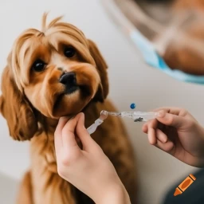
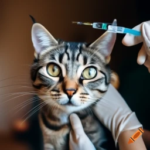

Aqui você pode encontrar informações sobre vacinas para cães e gatos.
As vacinas são uma parte importante da saúde de qualquer animal de estimação. Elas ajudam a proteger seus animais de estimação de doenças graves e potencialmente fatais. É importante que seus animais de estimação sejam vacinados regularmente.
Oferecemos uma ampla variedade de vacinas para cães e gatos. Nossas vacinas são de alta qualidade e são administradas por profissionais qualificados.
Se você tem alguma dúvida sobre vacinas para animais de estimação, por favor, não hesite em nos contatar.
Esperamos que você visite nossa clínica veterinária em breve!
Vacinas para cães

Os cães devem ser vacinados contra as seguintes doenças:
Vacinas para gatos

Os gatos devem ser vacinados contra as seguintes doenças:
Agendamento de vacinas
Os cães e gatos devem ser vacinados pela primeira vez quando têm de 6 a 8 semanas de idade. Eles devem então ser vacinados novamente a cada ano.
Importância das vacinas
As vacinas são uma parte importante da saúde de qualquer animal de estimação. Elas ajudam a proteger seus animais de estimação de doenças graves e potencialmente fatais.
É importante que seus animais de estimação sejam vacinados regularmente.
Sobre nós
Nossa clínica veterinária é dedicada a fornecer os melhores cuidados possíveis para seus animais de estimação. Temos uma equipe de profissionais qualificados que estão comprometidos em fornecer o melhor atendimento possível.
Esperamos que você visite nossa clínica veterinária em breve!